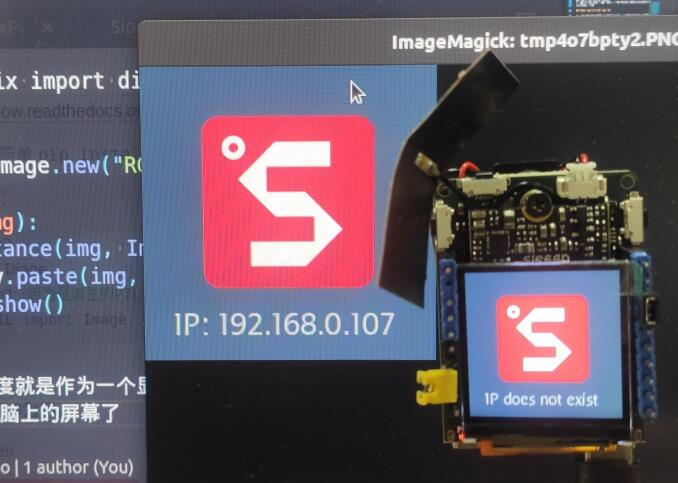
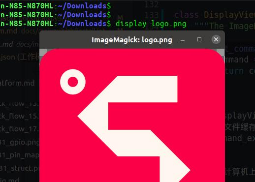

如何适配你的平台
通过【MaixPy3开发文档】可知基础的 Python3 编译、安装、测试等开发方法。
本文详细地介绍了 MaixPy3 项目结构，帮助你更好的适配 MaixPy3 环境。
2021 年的 Python 可以彻底跨平台了吗？
答案是还不足够的，仍然有很多依赖底层库差异导致了 Python 模块难以跨平台兼容。
虽然绝大部分软件模块（如：pil、numpy、urllib3）都支持跨平台了，但在嵌入式 linux 设备的 Python 调用硬件资源（如：video \ audio \ nn）的问题上，仍然不能达到理想的跨平台接口。
因此 MaixPy3 是围绕一系列支持边缘 AI 的 Linux 设备来做的，短期内不会考虑所有平台（如 Android & Windows ）。
适配 MaixPy3 流程是怎样的？
除去必要 Python3 调取硬件资源的方法，在 MaixPy3 上的开发更像是自上而下的模块接口统一的工作。
可以从上层软件往下要求硬件提供相关功能模块的适配。
从用户角度描述常用的功能如下：
- 支持显示器（display）
- 支持摄像头（camera）
- 支持音频录音播放（audio）
- 支持神经网络算法（nn）
- 支持按键、触摸、鼠标、键盘等事件（evdev）
- 支持点灯（gpio）
- 支持上网（network）
- 支持访问 I2C / SPI / UART / USB 等协议外设或传感器
于是适配功能的流程描述如下：
- 首先在 Linux 系统上提供上述功能模块，可以动（静）态依赖库提供，也可以系统调用提供，
还可以直接寄存器操作。 - 接着通过更多的 Python3 拓展模块实现相应的功能，此时拥有该模块基础使用的 Python 代码。
- 最后在 MaixPy3 中统一存在差异的 Python 代码，屏蔽不同设备不同硬件的差异。
以适配【显示器】为例
由于各个产品的硬件适配程度不同，有些过程可能已经提前完成，你可以选择跳过。
想要使用 Python 在屏幕上显示内容，可以先从上层 Python 代码开始描述功能，为了能够解决基本的图像处理，选择一个 Python 中经典流行通用的 PIL 图像库 pillow。
现在可以使用代码打开图片并显示到屏幕上了：
from PIL import Image
im = Image.new("RGB", (640, 480), "#FF0000")
im.show()
这时候若是从【显示器】的角度设计一个 display 模块，可以写成如下代码：
from PIL import Image
from maix import display
display.show(Image.new("RGB", (640, 480), "#FF0000"))
而 from maix import display 的实现可以简化成如下代码：
from PIL import Image
display = Image.new("RGB", (640, 480), "#FF0000")
def show(img):
global display
if isinstance(img, Image.Image):
display.paste(img, box)
display.show()
这时候 display 模块的角度就是作为显示器模块，实现了同一份代码在不同类型的 Linux 设备之间产生同样的效果。

在达到这样的效果验证后，就可以开始做具体的移植适配。
准备 Linux / Python3 / pillow 等基础功能模块
准备一个目标 Linux 平台上的 Python3 解释器，与之配套的还有 目标平台的 GCC 编译链与系统目录（/usr/include & /lib）相关文件。
期间经历一系列的目标 Linux 平台的系统移植和编译操作后
在确保 Linux 系统可以运行 Python 解释器后，通过 pip 下载安装 pillow 模块，验证上述 Python 实现的功能后，在 MaixPy3 的 setup.py 中给 setup() 函数的 install_requires 参数加入 pillow 模块。
这时候用户在安装 pip install MaixPy3 的时候，由于 MaixPy3 依赖于 pillow 这个模块，如果安装过程中发现系统里没有，就会尝试下载编译安装 pillow 模块，但对于一些不能编译安装模块的 Linux 设备就需要系统里直接内置 pillow 模块，以减少用户的困扰。
但运行代码后并没有效果
为什么？
这是因为不同平台的屏幕的显示方式（命令）有所不同，不妨从 pillow 来看看的 show 是如何工作的。
from PIL import Image
im = Image.new("RGB", (640, 480), "#FF0000")
im.show()
在这段代码中的 im.show() 最终会依赖于 ImageShow.py 来完成图像对象的展示。
在 Linux 上是如何工作的呢？
class UnixViewer(Viewer):
format = "PNG"
options = {"compress_level": 1}
def get_command(self, file, **options):
command = self.get_command_ex(file, **options)[0]
return f"({command} {quote(file)}; rm -f {quote(file)})&"
def show_file(self, file, **options):
"""Display given file"""
fd, path = tempfile.mkstemp()
with os.fdopen(fd, "w") as f:
f.write(file)
with open(path) as f:
command = self.get_command_ex(file, **options)[0]
subprocess.Popen(
["im=$(cat);" + command + " $im; rm -f $im"], shell=True, stdin=f
)
os.remove(path)
return 1
class DisplayViewer(UnixViewer):
"""The ImageMagick ``display`` command."""
def get_command_ex(self, file, **options):
command = executable = "display"
return command, executable
可以看到 DisplayViewer 继承 UnixViewer 对象，在 show_file 的时候将图像文件缓存到临时文件（tempfile.mkstemp()），再通过 get_command_ex 调用 display 系统命令（程序）完成图像的显示。
简单来说就是【在显示器上显示一张图片】的意思。

那在嵌入式 arm Linux 硬件又会是怎样的呢？
在 v831 的 linux 系统中可以使用和 display 类似的 fbviewer 程序来显示一张图像。
root@sipeed:/# fbviewer /home/res/logo.png
fbv - The Framebuffer Viewer
/home/res/logo.png
140 x 140
如何注入 fbviewer 的显示接口进 pillow 模块呢？（在 maix/__init__.py 中有如下一段代码）
try:
import shutil
from PIL import ImageShow
# use fbviewer on linux
# os.system('ln -s /usr/sbin/fbviewer /usr/sbin/display')
if shutil.which("fbviewer"):
class fbViewer(ImageShow.UnixViewer):
def get_command_ex(self, file, **options):
command = executable = "fbviewer"
return command, executable
ImageShow.register(fbViewer, 0)
except ModuleNotFoundError as e:
pass
可以看到当发现系统里有 fbviewer 时就会将该类注入到 PIL 的 ImageShow 的显示接口中，又或是在系统里直接将 fbviewer 链接到 display 命令上。
现在已经成功适配到具体的屏幕操作了，但这样就足够了吗？
这样还不够，这样实现仅是完成了功能。
简单分析一下，上述实现性能损耗主要发生在当图像对象进入 pillow show_file 的时候需要对其编码保存到某个临时文件（/tmp）中，然后再交给 fbviewer 去打开文件，fbviewer 对其解码后再写到 framebuffer 的设备（/dev/fb0）上。
问：为什么不把图像的 rgb 数组直接写到 fb 上呢？
答：没错，内部的 _maix_display 拓展模块实现是这样做的。
PyDoc_STRVAR(Display_draw_doc, "draw()\nDraw image(rgb888) bytes data to lcd.\n");
static PyObject *Display_draw(V831DisplayObject *self, PyObject *args)
{
PyObject *img_bytes = NULL;
int img_width = 0, img_height = 0;
if (!PyArg_ParseTuple(args, "Oii", &img_bytes, &img_width, &img_height))
{
return NULL;
}
if (NULL != self->disp) {
if (self->disp->width >= img_width && self->disp->height >= img_height) {
uint8_t *rgb_data = (uint8_t *)PyBytes_AS_STRING(img_bytes);
if (rgb_data != NULL) {
self->disp->draw(self->disp, rgb_data, (self->disp->width - img_width) / 2,(self->disp->height - img_height) / 2, img_width, img_height, 1);
}
}
}
Py_RETURN_NONE;
}
from _maix_display import V831Display
__fastview__ = V831Display(__width__, __height__)
__fastview__.draw(img.tobytes(), __fastview__.width, __fastview__.height)
这就是【屏幕清屏（变黑） dd if=/dev/zero of=/dev/fb0 】与【显示黑色图片 display black.bmp 】之间存在的性能差距。
至此【显示器】基本适配完成了，其他模块亦如此，但不一定每个模块都要使用这样方式进行移植，只是出于性能的考虑可以这样做。
可以自行查阅 Linux framebuffer 相关资料了解更多。
以 Maix 包作为通用的 Python API
做完上述功能后，就要回到这里思考一个用户体验的问题（开发者也可以是用户）。
如何让同一份代码在不同平台表现一致，减少用户的再次学习成本和认知成本，所以制作了一个 maix 入口模块，以减少重复实现的功能代码。
若是不使用某个模块（maix）去约束入口代码，就会产生代码碎片化，就如同你所看到的 Linux 上各种 Python 功能模块，做同一件事，不同平台上的接口与用法都不尽相同，但你需要花费不少时间去寻找并使用，为什么不能统一常用的功能接口呢，答案肯定是可以的，但这可能需要一些时间。
从摄像头获取一张图片并显示出来这样的功能，使用如下代码就可以实现这个功能，并且它在大多数平台上都是可以做到的。
from maix import display, camera
display.show(camera.capture())
为了实现上述统一接口，就需要在 maix/video.py 中多次 import 直到能够匹配的平台接口，这就会产生很多肮脏的接口代码，就如下所示。
camera = MaixVideo()
try:
# use libmaix on v831
from _maix_camera import V831Camera
class V831MaixVideo(MaixVideo):
def __init__(self, source="/v831"):
self.source = source
self.cam = None
def config(self, size=(480, 360)):
if self.cam == None:
super(V831MaixVideo, self).__init__(size)
self.cam = V831Camera(self.width(), self.height())
import time
time.sleep(0.2) # wait init
print('[camera] config input size(%d, %d)' %
(self.width(), self.height()))
def read(self):
if self.cam == None:
print('[camera] run config(size=(w, h)) before capture.')
self.config()
if self.cam:
ret, frame = self.cam.read()
if ret:
return frame # bytes
return None
def __del__(self):
if self.cam:
self.cam.close()
self.cam = None
camera = V831MaixVideo()
except Exception as e:
pass
try:
from cv2 import VideoCapture
class CvMaixVideo(MaixVideo):
def __init__(self, source=0):
super(CvMaixVideo, self).__init__((640, 480))
self.source = source
self.cam = VideoCapture(0)
def read(self):
ret, frame = self.cam.read()
if ret:
bgr = frame[..., ::-1] # bgr2rgb
return bgr.tobytes() # bytes
return None
def __del__(self):
self.cam.release()
camera = CvMaixVideo()
except Exception as e:
pass
这样的代码并不会多次运行，只会 import 的时候载入一次。
像 MaixPy3 在设计 display 和 camera 模块的时候都尽可能围绕则 pillow 和 python-opencv 模块的接口设计衍生而来的，可以看到 camera 的 MaixVideo 定义如下，是参考 opencv 结构实现的。
class MaixVideo():
def __init__(self, size=(640, 480)):
self._width, self._height = size
def width(self):
return self._width
def height(self):
return self._height
def write(self):
pass # for file
def read(self):
return b'\xFF\x00\x00' * (self._width * self._height)
def config(self, size):
pass
def capture(self):
from PIL import Image
tmp = self.read()
if tmp:
return Image.frombytes("RGB", (self._width, self._height), tmp)
return None
def close(self):
pass # for file
后来加入的 i2c \ spi \ pwm \ gpio 也尽量以通用接口实现。
但也有一些例外，如 PyAudio 在对接具体音频驱动设备存在 alsa 和 tinyalsa 两类接口，就需要从底层上去完成 Python 拓展 C 模块的编写，从而实现上层接口的一致，而截止 2021 年的神经网络 NN 模块实现更是千奇百怪，还难以统一。
所以通过 maix 模块作为用户调用的 API 入口，重新围绕功能来抽象设计对用户友好且统一的通用接口。
这样在不同平台上只需要链接不同的 Python 依赖模块即可，如 v831 链接的是 _maix_camera 模块，而 pc 上直接使用 opencv-python 模块，当然也可以是任意调用其他模块，不一定是 MaixPy3 所提供的参考模块，这取决于你的想法。
附录：如何优化 Python 模块？（以 GPIO 为例）
Python 上通用软件的接口大多都是通过 shell 接口调用系统程序完成的功能，所以在执行性能上有很大的损失。
所谓经过优化实际上是通过内置代码模块的方式进行操作的，这样就减少了不必要的数据交换了。
那么执行性能究竟差在哪里？除了上述说的【显示器】适配时的优化，下面再以 GPIO 的实现为例说明这个问题。
如果站在使用 Python 进行的 Linux 应用编程角度，可以这样实现 GPIO 的控制。
使用 sysfs 的接口
可以在 shell 接口配置 gpio 完成输入输出、拉高拉低。
sudo su
cd /sys/class/gpio
echo 12 > export
echo out > gpio12/direction # io used for output
echo 1 > gpio12/value # output logic 1 level
echo 0 > gpio12/value # output logic 0 level
echo 12 > unexport
而在 Python 里可以使用 os.system() 来输入 shell 命令完成。
使用 gpiod 的接口
可以参考 python3-gpiod 的实现，主要它是对 /dev/gpiodchipX 设备进行操作的。
def gpiod_chip_open(path: str) -> Optional[gpiod_chip]:
"""
@brief Open a gpiochip by path.
@param path: Path to the gpiochip device file.
@return GPIO chip handle or None if an error occurred.
"""
info = gpiochip_info()
try:
fd = os_open(path, O_RDWR | O_CLOEXEC)
except FileNotFoundError:
return None
# We were able to open the file but is it really a gpiochip character
# device?
if not _is_gpiochip_cdev(path):
os_close(fd)
return None
status = ioctl(fd, GPIO_GET_CHIPINFO_IOCTL, info)
if status < 0:
os_close(fd)
return None
if info.label[0] == "\0":
label = "unknown"
else:
label = info.label.decode()
return gpiod_chip(
num_lines=info.lines, fd=fd, name=info.name.decode(), label=label
)
可以通过 shell 接口操作 /sys/class/gpio 对象，也可以通过 from fcntl import ioctl 操作字符设备文件进行控制，与第一种差别不大。
使用 mmap 的接口
在 Linux 下直接读写物理地址，打开设备文件 /dev/mem 后使用 mmap 进行物理地址的映射，最后查阅数据手册获取寄存器地址读写相应的寄存器。
节选部分代码说明意图，注意不同平台的定义和实现都不尽相同。
unsigned int SUNXI_PIO_BASE = 0;
static volatile long int *gpio_map = NULL;
int sunxi_gpio_init(void) {
int fd;
unsigned int addr_start, addr_offset;
unsigned int PageSize, PageMask;
fd = open("/dev/mem", O_RDWR);
if(fd < 0) {
return SETUP_DEVMEM_FAIL;
}
PageSize = sysconf(_SC_PAGESIZE);
PageMask = (~(PageSize-1));
addr_start = SW_PORTC_IO_BASE & PageMask;
addr_offset = SW_PORTC_IO_BASE & ~PageMask;
gpio_map = (void *)mmap(0, PageSize*2, PROT_READ|PROT_WRITE, MAP_SHARED, fd, addr_start);
if(gpio_map == MAP_FAILED) {
return SETUP_MMAP_FAIL;
}
SUNXI_PIO_BASE = (unsigned int)gpio_map;
SUNXI_PIO_BASE += addr_offset;
close(fd);
return SETUP_OK;
}
然后编写相应的 Python 拓展 C 模块调用上述接口。
#define PD0 SUNXI_GPD(0)
#define PD1 SUNXI_GPD(1)
#define PD2 SUNXI_GPD(2)
#define PD3 SUNXI_GPD(3)
#define PD4 SUNXI_GPD(4)
#define PD5 SUNXI_GPD(5)
#define PD6 SUNXI_GPD(6)
#define PD7 SUNXI_GPD(7)
#define PD8 SUNXI_GPD(8)
#define PD9 SUNXI_GPD(9)
#define PD10 SUNXI_GPD(10)
#define PD11 SUNXI_GPD(11)
#define PD12 SUNXI_GPD(12)
#define PD13 SUNXI_GPD(13)
#define PD14 SUNXI_GPD(14)
#define PD15 SUNXI_GPD(15)
#define PD16 SUNXI_GPD(16)
#define PD17 SUNXI_GPD(17)
#define PD18 SUNXI_GPD(18)
#define PD19 SUNXI_GPD(19)
#define PD20 SUNXI_GPD(20)
#define PD21 SUNXI_GPD(21)
#define PD22 SUNXI_GPD(22)
#define PD23 SUNXI_GPD(23)
#define PD24 SUNXI_GPD(24)
#define PD25 SUNXI_GPD(25)
#define PD26 SUNXI_GPD(26)
#define PD27 SUNXI_GPD(27)
#define MISO SUNXI_GPE(3)
#define MOSI SUNXI_GPE(2)
#define SCK SUNXI_GPE(1)
#define CS SUNXI_GPE(0)
static int module_setup(void) {
int result;
result = sunxi_gpio_init();
if(result == SETUP_DEVMEM_FAIL) {
PyErr_SetString(SetupException, "No access to /dev/mem. Try running as root!");
return SETUP_DEVMEM_FAIL;
}
else if(result == SETUP_MALLOC_FAIL) {
PyErr_NoMemory();
return SETUP_MALLOC_FAIL;
}
else if(result == SETUP_MMAP_FAIL) {
PyErr_SetString(SetupException, "Mmap failed on module import");
return SETUP_MMAP_FAIL;
}
else {
return SETUP_OK;
}
return SETUP_OK;
}
static PyObject* py_init(PyObject* self, PyObject* args) {
module_setup();
Py_RETURN_NONE;
}
PyMethodDef module_methods[] = {
{"init", py_init, METH_NOARGS, "Initialize module"},
{"cleanup", py_cleanup, METH_NOARGS, "munmap /dev/map."},
{"setcfg", py_setcfg, METH_VARARGS, "Set direction."},
{"getcfg", py_getcfg, METH_VARARGS, "Get direction."},
{"output", py_output, METH_VARARGS, "Set output state"},
{"input", py_input, METH_VARARGS, "Get input state"},
{NULL, NULL, 0, NULL}
};
这样与上述实现 display 模块到优化处理的思路是相通的，目的都是减少不必要的接口之间的数据交换达到最终优化的目的。
总结
无论是哪种方法本意想通过抽象封装的通用接口来解决不同硬件上的差异，但有时会因为性能和内存的问题，只能放弃抽象直接访问底层寄存器硬件以提高性能。
上述接口的操作都是处于 linux 用户空间进行的，使用 Python 和 C 访问 /sys/class/gpio 设备在程序逻辑上并无区别，但从执行代码段和传递变量消耗的角度来看，越靠近底层的实现执行效率自然越高，通过 Python 拓展模块实现的 mmap 映射操作相对于直接使用 C 代码实现而言，两者性能差异几乎可以忽略不计，所以 Python 程序也不一定会性能低下，主要还是取决于具体的实现方式。
如果还想继续提高性能，就需要把寄存器操作下到内核空间了，可能这对于一些用户来说并不是必要的，例如用户点灯相对于系统而言是低频操作，而模拟 SPI 通信需要控制 GPIO 翻转则是高频操作，而从用户的角度来说，实现这个点灯功能（低频操作）对性能的要求不敏感，可以不做优化。
因此要根据硬件的实际情况，在性能与功能之间选择一个折衷的实现。